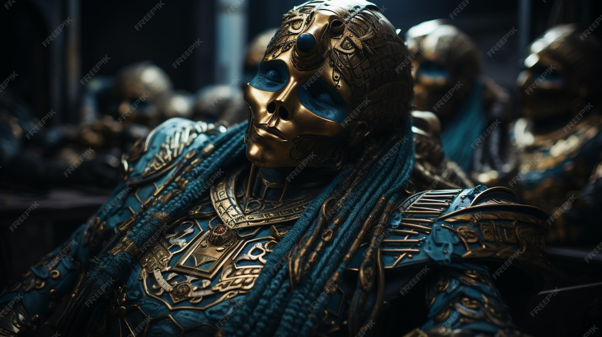
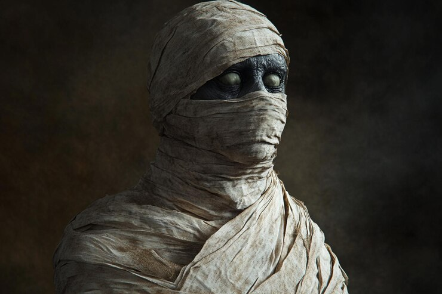

Mumie
nemrtvá • prokletí
Mumie je prastará nemrtvá bytost pocházející z dávných civilizací. Nejčastěji se objevuje v pyramidách, hrobkách a zapomenutých chrámech. Její tělo je obaleno starobylými obvazy napuštěnými temnou magií. Mumie se pohybuje pomalu, ale její vytrvalost je děsivá. Dokáže neúnavně pronásledovat svou kořist na velké vzdálenosti. Největší hrozbou je její smrtící kletba. Ta dokáže postupně oslabit i velmi silného hrdinu. Mumie bývá často strážcem dávných pokladů. Ve tmě se pohybuje téměř neslyšně. Je odolná vůči běžným zbraním. Oheň patří mezi její největší slabiny. Setkání s mumií je pro nepřipravené dobrodruhy velmi nebezpečné. Zkušení lovci nestvůr ji však dokážou přelstít. Přesto zůstává jednou z nejděsivějších bytostí starých hrobek.

